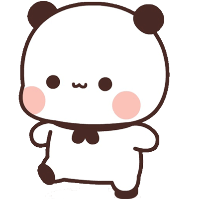
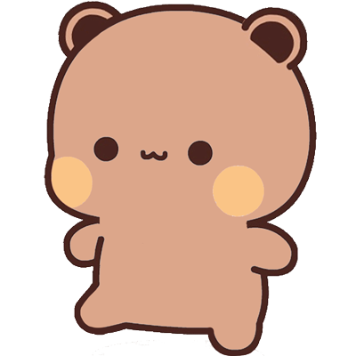

你
0
VS
对手
0
向上挑拍 = 挑高球 · 向下压拍 = 扣杀 · 左右挥 = 抽球 · 白圈助预判 · 挥拍发球
一二
布布
· 乒乓球
选择你的对手 · 你先得 11 分获胜
普通模式
困难模式 · 快球

对手 · 一二
白熊猫 · 灵巧多变

对手 · 布布
棕熊 · 力量扣杀
联机对战（局域网）
球拍
全向自由移动
，发球也要
挥拍击打
悬空球
由下向上挥 = 吊球
·
由上向下挥 = 扣杀
·
左右快挥 = 抽球侧旋
，越快越猛
白圈 = 预测落点（台内），红圈 = 将出界；网带闪光 = 过网提示
胜利！
11 : 5
再 来 一 局
返 回 主 菜 单
请竖屏游玩
联机对战 · 局域网
同一 WiFi 下，一人「创建房间」当主机，另一人「加入房间」扫码/粘贴连接。
无服务器，数据只在两台设备之间直连。
创建房间（主机）
加入房间（客人）
你是主机 · 等待客人加入
用手机相机扫下面的二维码（或复制文字发给对方）。
对方加入后，把对方发来的「应答码」粘贴到下方，点完成连接。
完成连接
你是客人 · 输入房间码
生成应答码
让主机用相机扫这个「应答码」，或把文字发给他粘贴。
返 回